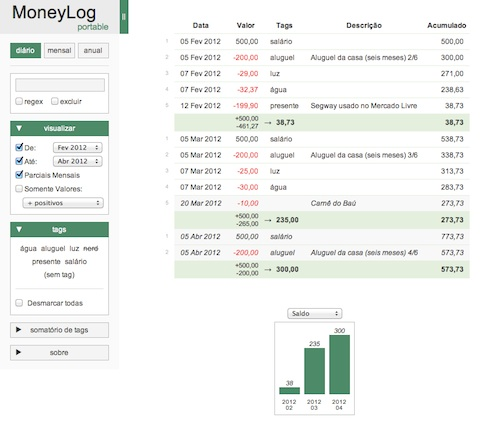

Este é o resultado de mais de 300 horas de trabalho que investi nesta versão nova do MoneyLog. Estou muito satisfeito com o resultado, espero que você também goste!
Itens marcados com uma ★ indicam mudanças no comportamento do MoneyLog em relação à versão anterior. Não deixe de ler!
Usuário da versão Beta? Leia aqui primeiro.
Veja também: Anúncio desta versão 5.
- Quatro sabores
- Interface nova (UI) ★
- Mobile / smartphone
- Imprimir extratos
- Senha de acesso
- Tela Cheia
- Widget: Visualizar ★
- Widget: Nuvem de tags
- Widget: Somatório de tags
- Widget: Sobre
- Filtros em todos os extratos ★
- Formato da data ★
- Relatório de tags
- Somatório de linhas
- Gráficos
- Lançamentos ★
- Dia 99 = último dia do mês
- Configuração
- Idiomas
- Faça seu próprio Widget
- Changelog
- Agradecimentos
- Patrocine o MoneyLog ♥
Quatro sabores
Agora o MoneyLog está disponível em quatro sabores diferentes:
- MoneyLog Cloud — online, integrado com o Dropbox.
- MoneyLog Browser — online, só pra brincar.
- MoneyLog Portable — offline, tudo-em-um arquivo HTML.
- MoneyLog Beta — offline, arquivos TXT locais, versão GitHub.
Interface nova (UI) ★
A interface do app foi completamente redesenhada (por @xupisco). Agora está mais moderna e organizada, adaptando-se melhor a telas largas (wide). Todos os controles foram movidos para uma barra lateral à esquerda, deixando todo o espaço vertical livre para o extrato e seus gráficos.
Versão 4:
Versão 5:

Você pode abrir e fechar as "caixinhas" da barra lateral (widgets), deixando à mostra somente o que interessa. Há também configurações para definir o estado de cada widget, inclusive até removê-los da interface. E ainda, você pode remover toda a barra lateral com um clique.
Mobile / smartphone
Com a nova interface, agora o MoneyLog está preparado para se adaptar à tela pequena de seu iPhone ou Android. Assim, você pode consultar seus extratos mesmo quando estiver na rua.
Se você estiver agora em seu celular, experimente!
Imprimir extratos
Agora, ao mandar imprimir alguma tela do MoneyLog, são feitos ajustes para que você tenha a melhor impressão possível, somente com o que interessa, sem distrações:
- A barra lateral é removida, sobrando apenas o extrato.
- Cores são removidas, ficando tudo em preto e branco (exceto números negativos).
- O botão do gráfico vira um título.
- As barras do gráfico ficam apenas com o contorno.
Senha de acesso
Que tal definir uma senha de acesso, para que curiosos não possam ver seus extratos? Agora é possível, com a nova configuração myPassword.
Tela Cheia
Novo botão para entrar no modo Tela Cheia, que esconde a barra lateral, deixando apenas o extrato brilhando sozinho na tela.

Veja também: configuração nova initFullScreen.
Widget: Visualizar ★
Neste widget foram concentradas as opções que costumavam ficar no topo da versão anterior.
Duas opções da v4 foram removidas:
- Somente Recentes: [X meses]
- Mostrar Lançamentos Futuros
Em seu lugar, agora você tem a flexibilidade de definir exatamente qual o intervalo de meses do extrato, com as novas opções De: e Até:, que são automaticamente povoadas somente com os meses usados em seus lançamentos.

Nota: Se quiser as opções antigas de volta, use a configuração useLegacyDateFilter.
Veja também as configurações novas:
- showViewWidget
- initViewWidgetOpen
- checkDateFrom
- checkDateUntil
- initMonthsOffsetFrom
- initMonthsOffsetUntil
Widget: Nuvem de tags
A grande novidade das tags é a nuvem com três estados:
- primeiro clique seleciona
- segundo clique exclui
- terceiro clique desmarca
Neste exemplo, estão selecionadas as tags livro e mercado, e está excluída a tag presente. As outras não estão marcadas. O MoneyLog interpreta este cenário, assim:
Mostre no extrato somente os lançamentos que possuem as tags livro ou mercado. Mas se algum destes lançamentos também possuir a tag presente, remova-o do extrato.
Nerds: (livro || mercado) && !presente
Assim eu consigo uma lista de todas as minhas compras na livraria e no supermercado, exceto aquelas que comprei um presente para alguém.
Se eu marcar a opção Combinar, aí só vão aparecer no extrato os lançamentos que obedecem a TODAS as condições ao mesmo tempo: o lançamento deve ter ambas as tags livro e mercado, e não pode ter a tag presente. Ou seja, um livro que comprei no supermercado, para mim mesmo.
Nerds: livro && mercado && !presente
Cansou de brincar com tags? Clique na opção Desmarcar todas.
Veja também as configurações novas:
Widget: Somatório de tags
Esta caixinha bacana lhe mostra o saldo final de cada uma das tags que estão no extrato. Use a opção Ordenar por valor para… Bem, acho que não preciso explicar, né?


Veja também as configurações novas:
- TagSummary.config.active
- TagSummary.config.opened
- TagSummary.config.showTagless
- TagSummary.config.checkSort
Widget: Sobre
Esta é a última caixinha da barra lateral e traz informações sobre o MoneyLog.
É aqui que você confere qual versão do MoneyLog você está usando.
Caso esteja no MoneyLog Cloud, no final também há um link para o commit do backend que está sendo usado no servidor, para você poder ir no GitHub conferir.
Filtros em todos os extratos ★
Na v4, os filtros (pesquisa, tags selecionadas, somente valores) só funcionavam no extrato diário. Quando você mudava para o mensal ou anual, eles eram desabilitados e sumiam da interface.
Não mais! Agora você pode aplicar todos os filtros também nos relatórios mensal e anual: digitar um texto de busca, clicar na nuvem de tags, etc. Se bater a dúvida de quais lançamentos estão entrando na conta, basta voltar ao extrato mensal para ver a lista.
Formato da data ★
Desde a sua primeira versão, os extratos do MoneyLog sempre mostraram a data no formato AAAA-MM-DD, o mesmo usado nos lançamentos.
Agora o formato da data no extrato diário é mais amigável, usando a ordem do padrão brasileiro (dia, mês, ano), com o nome mês abreviado.
Já no extrato mensal, o nome completo do mês é mostrado.
Se preferir, você também pode personalizar o formato da data. Veja as seguintes configurações:
Para voltar ao formato antigo AAAA-MM-DD, basta desligar a configuração showLocaleDate.
Relatório de tags
Esta era a funcionalidade mais pedida pelos usuários, e foi finalmente implementada: um relatório de tags, mostrando os totais mensais de cada uma, com somatório e média no final.
O relatório de tags aparece nos extratos mensal e anual, logo após o gráfico de barras.
Assim como na tabela do extrato, você pode clicar no topo de cada coluna para mudar a ordem das linhas, ficando fácil ver qual tag gastou mais em determinado mês, ou no geral.
Se você costuma usar múltiplas tags em seus lançamentos, pode aparecer uma opção "Esconder as tags relacionadas" logo abaixo desta tabela. Se você marcá-la, somente as tags explicitamente selecionadas na Nuvem de Tags serão mostradas neste relatório.
Veja também as configurações novas:
Somatório de linhas
Quando você clica em uma linha do extrato, agora ela fica selecionada. Clique novamente para cancelar a seleção.
Quando você seleciona duas ou mais linhas no extrato, aparece uma janelinha no canto inferior direito, com os somatórios dos valores destas linhas: total, média, mínimo, máximo e número de linhas.
Se você estiver nos extratos mensal ou anual, aparecerá um menu no topo desta janelinha, para você poder escolher qual coluna do extrato que deve ser usada nos somatórios: Ganhos, Gastos, Saldo.
O botão Limpar, como você já deve ter deduzido, desmarca todas as linhas que você selecionou no extrato.
Gráficos
Agora o gráfico de barras também aparece no extrato diário. Antes ele era restrito ao mensal e anual.
Um detalhe bacana, é que agora se você repousar o mouse sobre o valor abreviado que aparece no topo de cada barra, vai surgir um balão (tooltip) mostrando o valor original.
Veja também as configurações novas:
Lançamentos ★
Houve uma mudança importante no formato dos lançamentos. Agora o separador dos dados é simplesmente "brancos", que podem ser Tabs ou espaços, ou ambos. Você escolhe.
Antes era obrigatório haver um Tab entre cada campo, assim:
2012-02-22 -14,56 almoço| bar da esquina
Mas agora, se você preferir, pode usar somente espaços em branco e nenhum Tab:
2012-02-22 -14,56 almoço| bar da esquina
Como antes o Tab era o delimitador, você podia colocar espaços em branco em qualquer lugar, inclusive em lugares bizarros, que o MoneyLog silenciosamente aceitava. Agora, é preciso arrumar a bagunça: há dois lugares onde não é mais permitido colocar espaços.
1. Não deve haver espaços entre o sinal e o valor. Agora isso vai dar o erro "Lançamento inválido na linha N", pois o sinal deve estar sempre junto do número.
Errado:
2012-02-22 - 14,56 almoço| bar da esquina
Certo:
2012-02-22 -14,56 almoço| bar da esquina
2. Não deve haver espaços entre o valor e o número de parcelas. Não vai dar erro, mas o número de parcelas vai ser identificado como uma tag. Para resolver o problema, basta remover o espaço em branco após o valor.
Errado:
2011-09-10 100 *4 presente| O Zé vai me dar 100 pilas 2011-12-05 -500 /5 nerd| Netbook usado
Certo:
2011-09-10 100*4 presente| O Zé vai me dar 100 pilas 2011-12-05 -500/5 nerd| Netbook usado
Você pode fazer estas alterações na mão, ou usar o conversor para atualizar seus lançamentos para o formato novo de maneira automática. Escolha a opção "MoneyLog v4".
IMPORTANTE: Confira o resultado da conversão (faça um diff) para garantir que nenhum dado foi perdido. Eu testei bastante, mas sabe como é, bugs podem aparecer.
Se você quiser voltar ao comportamento anterior, use a configuração useLegacyDataFormat = S. Mas apesar de hoje isso funcionar, eu não testo mais e pode quebrar no futuro. Eu recomendo atualizar seus dados e não se preocupar mais com isso.
Para saber mais, consulte o Guia de Lançamentos.
Dia 99 = último dia do mês
Agora existe um atalho bacana para você fazer um lançamento no último dia mês, sem precisar pensar exatamente qual será este dia. É 31? É 30? É ano bissexto? Não importa, basta colocar dia 99 e pronto.
2012-01-99 -20 Mesada do Júnior
E sabe o que é mais legal? É que isso também funciona para pagamentos recorrentes, então você pode cadastrar de uma vez a mesada do ano todo:
2012-01-99 -20*12 Mesada do Júnior
E o MoneyLog vai se encarregar de expandir todos os pagamentos para a data correta. Perceba que 2012 é ano bissexto, e isso também é levado em conta:
Configuração
Algumas configurações trocaram de nome:
- defaultMonthPartials → checkMonthPartials
- defaultRegex → checkRegex
- defaultNegate → checkNegate
Fora as já citadas nos tópicos anteriores, há várias outras configurações novas:
- showBalance
- dataFilesDefault
- ignoreDataOlderThan
- ignoreDataNewerThan
- sortData.d.index
- sortData.m.index
- sortData.y.index
- sortData.d.rev
- sortData.m.rev
- sortData.y.rev
Mas, quer saber? Vá direto no Guia de Configuração que lá está tudo o que você precisa saber sobre onde, como, e o quê configurar.
Idiomas
Além do português e inglês, agora o MoneyLog também está traduzido para estes idiomas:
- Catalão — por @pacoriviere
- Espanhol — por @g_nemmi e Isadora Pinardi
Faça seu próprio Widget
Se você manja de HTML e JavaScript, saiba que é muito fácil criar um widget novo ali na barra lateral, bastam poucas linhas de código no final de seu config.js.
Há quatro widgets de exemplo:
E o teu widget, vai ser do que? Lembretes? Algum somatório especial? Exportar os dados do extrato para CSV? Use a criatividade! E depois contribua lá no repositório: https://github.com/aureliojargas/moneylog-plugins
Changelog
Este é somente para nerds que gostam de estudar códigos-fonte: o Changelog resumido desde a v4, em inglês, com links para os principais commits feitos durante o desenvolvimento desta versão.
Agradecimentos
Esta v5 não seria nem metade do que é se não fosse pelo trabalho voluntário do Leandro Voltolino (@xupisco). Foi ele quem criou a interface nova, programou todo o código de servidor do MoneyLog Cloud, fez o ícone para iOS, criou os primeiros plugins, escolheu as cores de cada sabor, além de apontar bugs e dar várias ideias.
Trabalhamos juntos no MoneyLog grande parte do tempo durante as últimas semanas, via Google Talk. O Leandro ajudou tanto que o considero coautor dessa versão nova. O cara é 10 mesmo, valeu Leandro!
Outro que me ajudou muito foi o Denilson Figueiredo de Sá (@denilsonsa). Desde 2009 trocamos e-mails sobre o MoneyLog. Ele já descobriu vários bugs e deu ideias bacanas, como o Somatório de linhas. Foi de nossas discussões de ideias em e-mails quilométricos que surgiram as soluções para o Relatório de tags e os seletores de datas. Valeu Denilson, você é meu controle de qualidade :)
Um agradecimento muito especial vai para o XXXXXXXX (ele pediu anonimato), que durante 5 meses doou 10% de sua renda para o projeto MoneyLog. Esta foi uma atitude única, admirável, que me tocou muito. Todo mês, quando vinha a sua doação, eu ficava muito feliz com o gesto. Só tenho a aplaudi-lo, valeu mesmo! Deixo aqui um trecho de seu e-mail:
"Muito do meu conhecimento e influências são pessoas que postam conhecimento ou software gratuitamente na Internet. É importante retribuir isso também em doações em dinheiro, principalmente com doações mais consistentes. O meu plano é doar regularmente 10% da minha renda mensal e escolher alguns projetos de software livre, pessoas, sites, etc e doar para cada projeto/pessoa por um período de 6 meses a 1 ano, pra dar uma boa injeção de motivação. [...] No software livre, nós recebemos muito da comunidade, e poder devolver também é um privilégio."
Agradeço também aos tradutores, que possibilitaram que novas audiências possam usar o MoneyLog: Paco Rivière (@pacoriviere), Gonzalo Nemmi (@g_nemmi) e Isadora Pinardi.
E finalmente, MUITO OBRIGADO a todos que ajudaram com ideias, patches, testes e bug reports:
- @adolfont
- @bebetasso
- @biancafreitas
- @doutorchefe
- @eeev2011
- @erickmor
- @_Felipe
- @guaracybm
- @laubstein
- @lucmove
- @magasine
- @osantana
- @pirolla
- @ralcantara
- @ricobl
- @vyper
- @wcomnisky
- Carlos Alvsan
- Tiago Centurion
Patrocine o MoneyLog ♥
E aí, gostou das novidades?
Que tal doar R$ 5,00 para ajudar o projeto?
 comments powered by Disqus
comments powered by Disqus